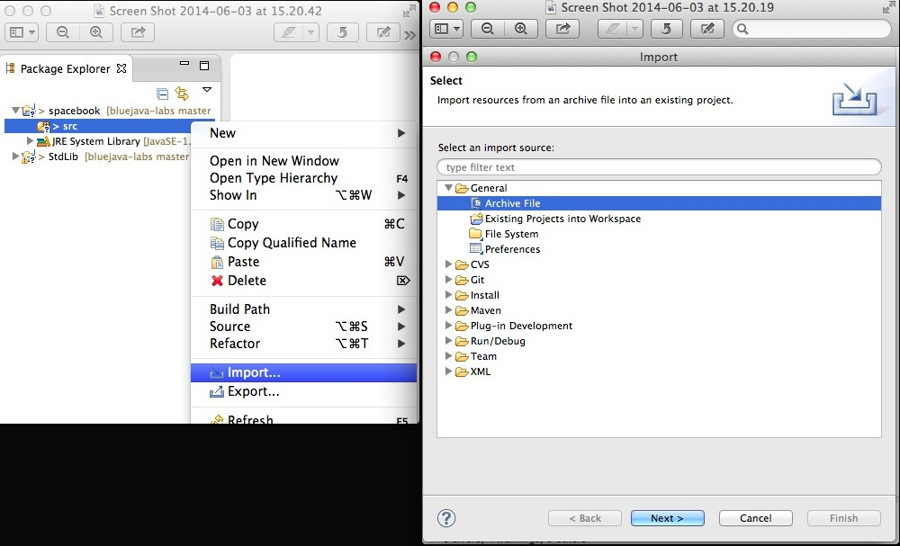
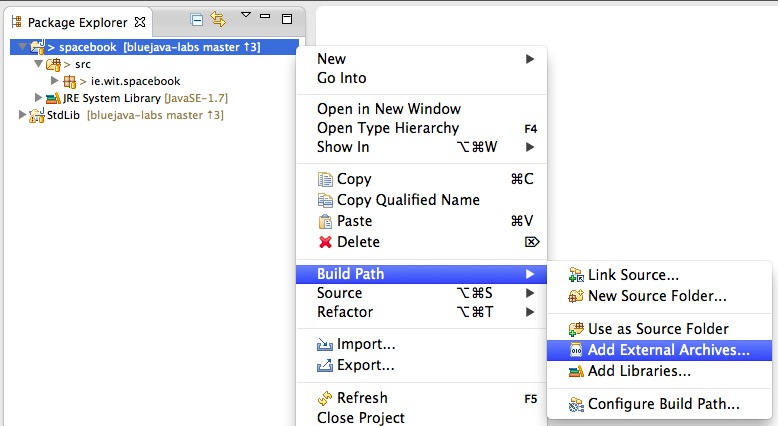

Objectives
In addition to exploring Exceptions, we introduce the Eclipse Integrated Development Environment (IDE). We examine the class Object, which is the root of the Java class hierarchy, and explore some of the methods in Object', for example toString, equals, hashCode and clone.
We also briefly explore an number of optional topics such as importing and exporting jars and using customized styling within the Eclipse environment.
Setup
If Eclipse is not already on your computer then:
Download Eclipse IDE for Java developers.

Launch Eclipse and when prompted to select a workspace browse to workspaceBlueJ/labs/session11
- Create new folder ICTSkillsIO and press OK.
Your directory stucture should be somewhat similar to that shown in Figure 3.
When you launch Eclipse for the first time in a new workspace you will be presented with the Eclipse welcome screen:
Reveal the Eclipse Package Explorer by clicking on the Restore Icon which appears in the top-left corner of the Eclipse window when you position the mouse in this area, as depicted in Figure 5:
Eclipse facilitates development in several environments in addition to Java. For example, JavaScript, Web, C++ and so on and provides individual perspectives for each environment.
A perspective is simply an arrangement of sub-windows within the Eclipse main window.
- If you are unsure which perspective is open you may invoke the menu commands Window | Open Perspective | Java.
- This will ensure the Java perspective is active. You may quickly verify by observing that the Java icon in the top right corner of the Eclipse window is depressed (shaded) as shown in Figure 7.
In the next step we shall create work with a Java project.
BlueJ project to Eclipse
We shall now import the BlueJ shapes project into a similarly named project in Eclipse.
In the ICTSkillsIO workspace create a new project named shapes:

Create a package named
ie.wit.ictskills
Download and expand the archived file shapes.zip into a temporary folder.
Import the files in the expanded folder shapes into the Eclipse shapes project:


Four classes will be imported:
- Canvas
- Circle
- Rectangle
- Triangle
To fix the errors that will probably be generated, add
package ie.wit.ictskills;to the top of each class file.
For example:
package ie.wit.ictskills;
public class Rectangle
{
private int xSideLength;
private int ySideLength;
private int xPosition;
private int yPosition;
private String color;
private boolean isVisible;
public Rectangle()
{
xSideLength = 60;Access to a main method is required to run an application.
Create a new class named, arbitrarily, MainShapes as follows:
package ie.wit.ictskills;
public class MainShapes
{
public static void main(String[] args)
{
Circle circle = new Circle(100, 0, 0, "yellow");
circle.makeVisible();
Rectangle rectangle = new Rectangle();
rectangle.makeVisible();
Triangle triangle = new Triangle();
triangle.makeVisible();
}
}In main we have created instances of Circle, Rectangle and Triangle classes and invoked makeVisible on each object.
To run the program select MainShapes and then, from the menu, select Run As | Java Application as shown here:
Here is the output generated by the app:
Quit the MainShapes window when done:
A compressed archived copy of the Eclipse shapes project is available here.
Compile jar
A Java Archive or JAR file is a compressed (zip) file typically containing Java binary files (.class) and optionally corresponding source files (.java) in addition to other optional resources. See here for a more detailed treatment of the subject.
In this step we shall:
- Create a Java project in Eclipse
- Import a selection of source files from the standard libraries developed by Sedgewick & Wayne
- Compile and export these files as a jar file
- Create a demo project in which we shall link to this newly created jar and use some of its features.
Using Eclipse menu commands create a new project named StdLib:
- File | New | Java Project

Download and save to a temporary directory the archive file ie.zip available here
- Select src folder in StdLib in the Package Explorer, right click and select Import
- A window named Import appears in which you should select Archive File and then click Next.
Browse to the temporary folder and select ie.zip
Expand src folder in the Package Explorer. Open the file StdOut.java. You should the be presented with a file structure as shown in Figure 7 together with StdOut.java file just opened.
Observe the package name at the head of the file StdOut.java:
- package ie.wit.io.ictskills; Read the the Oracle online article Naming a Package to understand why this name has been chosen.
Export JAR
In this step we shall export the project StdLib as a JAR file.
In the Eclipse menu select File | Export
- In the window named Export that opens, select Java | Jar file.
- Press the Next button.
- A window, JAR Export, opens in which should be ticked:
- Export generated class files and resources
- Export Java source files and resources
- Press the Browse button located to the right of the input slot named JAR file:
- Browse to a location on your disk where you wish to store the JAR. For example on a PC it might be C:\mylibs
- When at the chosen location
- Press the New Folder button at the bottom-left of the Save window.
- Name the folder mylibs.
- Enter a name for the JAR, for example, stdiolib, in the Save As input text area located towards the top of the Save window.
In the next step we shall use some of the functionality in the exported JAR, for example StdOut, as an alternative to Java's Sytem.out.
Using stdiolib
Here is an outline of the approach we shall adopt to explore some of the functionality in the newly created JAR will be as follows:
- Create a new Java project in Eclipse.
- Download the archive file spacebook and save in your temporary directory.
- Import the spacebook folder into the Eclipse project
- Integrate the library JAR stdiolib and use its functionality to:
- Read a log file.
- Amend the log file.
- Write the amended log file.
- Use a simple demonstration to compare some of stdiolib functionality to that of Java's System.out.
Here are the detailed steps:
Download spacebook archive
- A modified version of the spacebook project is available here
- Download and save to your temporary directory.
Create Java Project
Execute Eclipse menu command:
File | New | Java Project
Name the project spacebook.
- Press Finish.
In Eclipse Package Explorer open spacebook and select src folder.
- Right click and in menu that opens select Import
- This opens the Import window.
- Select Archive File in the Import window. 
- Click Next and in the window that opens (also Import)
- Browse to the temporary folder in which you have saved the archive file spacebook.zip.
- Press Finish button
- Expand the src folder in Package Explorer. You should be presented with that shown in Figure 4.
Import external JAR
The following series of steps explain how to import the JAR file we created earlier so that we can experiment with alternatives to System.out and so on.
- Select spacebook project in Package Explorer Right click- and execute Build Path | Add External Archives 
- Browse to the folder where you saved stdiolib.jar.
- Select the JAR file and press Open.
- Observe that stdiolib.jar now appears in the Package Explorer pane. Expand this: you should see the imported files as depicted in Figure 7.
Using the imported JAR functionality
- Select the package ie.wit.spacebook and execute New | Class
- In the text edit field Name in the window New Java Class type TestSpacebook.
- Press Finish.
- The newly created class, TestSpacebook, opens automatically.
- Refactor the class as follows:
package ie.wit.spacebook;
import ie.wit.io.ictskills.StdOut;
public class TestSpacebook {
public static void main(String[] args) {
System.out.println("Hello World");
StdOut.println("Hello ICTSkills World");
}
}What follows is a brief explanation of this newly created and refactored class:
The class is in the package ie.wit.spacebook.
- package ie.wit.spacebook;
We import the class StdOut from the stdiolib.jar. Notice that this class is in a different package to TestSpacebook.
- import ie.wit.io.ictskills.StdOut;
We define a main method. Every Java application uses a main method to engage with low-level Java infrastructure and the system's operating system.
- public static void main(String[] args) {...}
Next we print the famous (or infamous) "Hello World" slogan using Java's System.out.println method.
- System.out.println("Hello World");
Finally, we use one of the methods in StdOut, also called println, to display a slightly different (and somewhat more relevant) slogan.
- StdOut.println("Hello ICTSkills World");
Run the application, TestSpacebook:
- Select TestSpacebook.java in the Package Explorer window
- Execute Eclipse Menu command: Run | Run
- Observe the output in the Console window at the bottom of the Eclipse perspective.
CStyle Formatter
Installing CStyle Formatter
Following are instructions to change the Eclipse Formatter, which controls the default positioning of curly brackets and so on in Java source files.
- Download and expand the file style.java.xml.zip into your temporary directory.
- Open the Eclipse Preferences window and type formatter in the top left edit input slot. This will allow you to quickly locate the Java | Code Style | Formatter window:
- Press the Import button, browse to the temporary folder, select style.java.xml and press Open.
- In the Formatter window the Active profile should now be CStyle whereas previously it was Eclipse[built-in]
- Press Apply and OK.
- Open TestSpacebook.java in Eclipse.
- Select all using, for example, Menu commands Edit | Select All.
- Execute menu command: Source | Format.
- Observe the old and new styles of presentation:
Logger
In this step we shall:
- Develop a simpler Logger in the StdLib project
- Use Logger in spacebook to log an entry each time a Message object is created
Logger
- Create a new class named Logger in StdLib project in the ie.wit.io.ictskills package.
public class Logger
{
}We shall use existing classes and methods in StdLib. Here is a method to write to a file. If the file does not exist the method first creates the file.
/**
* Write a string to a file
* If file does not exist it is automatically created
*
* @param data
* the string to write to file
* @param filename
* the user-supplied filename
*/
public static void write(String data, String filename)
{
Out out = new Out(filename);
out.println(data);
out.close();
}Next we write a method to append a string to an existing file:
/**
* Append string data to end of file without changing existing file content,
* creating the file if it does not already exist.
*
* @param data
* the string to append to file
*/
public static void append(String data, String filename)
{
Out.append(data, filename);
}Finally we develop a method to read the contents of the file and print to the console:
/**
* Read all the file contents of file and print to console.
*
* @return the contents of the file
*/
public static String read(String filename)
{
In in = new In(filename);
String log = in.readAll();
in.close();
return log;
}Add these methods to the Logger class and export StdLib as before, overwriting the existing stdiolib.jar file when prompted.
Now, return to the spacebook project:
- Select spacebook
- Right click and select Refresh in the menu that appears.
- This will cause the stdiolib JAR file to be updated.
- Allows us to use newly added Logger class methods.
Open the Message class and add a new field:
public static final String logFileName = "spacebook-messagelog.txt";Next add a method to generate a log entry message:
private void logMessage()
{
String logEntry = "Log entry at " +
Datestamp.timestamp() +
" : Message from : " +
from.firstName + " to " +
to.firstName + " : Message content : " +
this.messageText;
Logger.append(logEntry, logFileName);
}This will return strings similar to those shown in Figure 2 and append each log-entry in turn to the log file on disk.
The final step in adding a logging facility to Message is to invoke logMessage.
- Add the invocation to the constructor:
logMessage();Exceptions
- Working with Eclipse, create a new folder in your working session (topic) folder named exceptions.
- Create a new Java project located in this directory:
- Name the project exceptions.
Unchecked exception
Select the folder src in the project exceptions in the Package Explorer, right click and in the menu that appears select new package.
- Name the package unchecked.
- The package icon should appear in the Package Explorer
We shall now demonstrate the generation of an unchecked exception.
We will write these simple classes:
- Book
- Test
Here is the Book class:
package unchecked;
public class Book {
String title;
String author;
Book(String title, String author)
{
this.title = title;
this.author = author;
}
}Here is the Test class. It contains an unitialized Map instance variable, a method named getBook and a main method to conduct a simple test which results in a NullPointerException.
package unchecked;
import java.util.Map;
public class Test {
Map<String, Book> books;
public Book getBook(int index) {
return books.get(index);
}
public static void main(String[] args) {
Test test = new Test();
Book book = test.getBook(0);
}
}- The class contains a field of type Map
- The map is not initialized.
- A method getBook attempts to access the map.
- This triggers a NullPointerException.
- We have already encountered this exception in previous labs as it, unfortunately, occurs all too frequently.
Run Test and observe the output in the Console:
We have just demonstrated an unchecked exception.
- Introducing an unchecked exception handler is optional.
- The exception is generated by the Java infrastructure once the anomaly is encountered during the program's execution.
- At the instant that the anomaly is encountered, an exception object is created, the program execution ceases and:
- The execution path begins to unwind or reverse to the point where the exception is caught or handled, passing the exception object up the call stack.
- If the exception is not handled then the program crashes.
- If the exception is handled then the program behaves as dictated by the exception handling code.
In this instance, the call stack is the list of methods invoked up to the point where the exception is generated.
- A list of these methods is often referred to as a stacktrace.
Modify the above code, as shown below, so as to handle the exception.
- Run Test again and verify you have correctly refactored the code.
Here is a refactored main method that will avoid the program crash and print a message to the console.
public static void main(String[] args) {
Test test = new Test();
try {
Book book = test.getBook(0);
} catch (RuntimeException e) {
e.printStackTrace();
}
}Checked exception
Create a package named unchecked in the exceptions project.
The purpose of this section of the lab is to generate a (very contrived) checked exception and handle this exception so as to avoid a program crash and inform the developer that a problem exists.
- Develop an exception class called BookException.
- Develop a class Test to generate a BookException exception
- Run Test.main to trigger the exception.
Here is the BookException:
package checked;
public class BookException extends Exception
{
String message;
BookException(String message)
{
this.message = message;
}
}Here is the code for Test.
- Notice the header (API) of the method getBook has been altered from previously.
- public Book getBook(String key) throws BookException
- indicating that in the event of a null key, a BookException object is thrown
- public Book getBook(String key) throws BookException
- Within the method the keyword throw is used to begin the unwinding process.
- The keyword throws followed by the exception is used in the method header. ~~~ package checked;
import java.util.Map; import unchecked.Book;
public class Test {
Map
public Book getBook(String key) throws BookException { if(key == null) { throw new BookException("\nBook exception encountered in method getBook"); } return books.get(key); }
public static void main(String[] args) { Test test = new Test(); Book book = test.getBook(null); } } ~~~
An error is flagged:
Select the light bulb | x icons, right click and in the menu that appears select Quick Fix.
Select Surround with try/catch.
try-catch block is inserted as shown in Figure 8.
Run Test and observe the output as shown in Figure 9.
- It includes the message we provided when constructing BookException in the method getBook.
main function
A final note on the main function.
Consider the method header:
- public static void main(String[] args)
The parameter String[] args may be used to input information to the method when the application execution begins.
Here's an example from ICTSkills Java 2013:
/**
* @file Cross.java
* @author kmurphy
* @practical lab-04
* @brief Draw a slanted cross (X)
*/
public class Cross {
public static void main(String[] args) {
int n = Integer.parseInt(args[0]);
for (int row=1; row<=n; row++) {
for (int col=1; col<=n; col++)
System.out.print( (row==col || row==n-col+1) ? "*" : " ");
System.out.println();
}
}
}Create a new project named cross.
Add the class Cross to the project, compile and run.
An exception is thrown:
Study the message in the console:
Exception in thread "main" java.lang.ArrayIndexOutOfBoundsException: 0
at cross.Cross.main(Cross.java:14)
Here is the code at line 14:
int n = Integer.parseInt(args[0]);
The reason for the out-of-bounds exception is that the String array has not been initialized. We can do this in Eclipse as follows:
Select the class Cross (or package cross) and from the menu Run | Run Configurations.
- In the Run Configurations window that opens select the tab Arguments and enter, for example, 10.
- Ensure that Cross is selected in the left panel.
- Then press Run
Observe the output in the console:

The code could be refactored to behave more robustly as follows.
- We have introduced a conditional that checks if the String array is empty in which case we provide a default argument.
- Experiment by removing the Program arguments from the Run Configurations window and re-running the program.
public static void main(String[] args)
{
int n = 20;
if(args.length > 0)
{
n = Integer.parseInt(args[0]);
}
for (int row = 1; row <= n; row++)
{
for (int col = 1; col <= n; col++)
System.out.print((row == col || row == n - col + 1) ? "*" : " ");
System.out.println();
}
}Object
Object class
If a class, say Spacebook, does not use the extends keyword, that is, if a superclass is not specified, then the immediate superclass of Spacebook is Object.
The following two definitions are equivalent:
public class Spacebook
{
}public class Spacebook extends Object
{
}Object is the ultimate superclass to all other classes in Java:
- Every class is a descendant of Object, direct or indirect.
Object has a number of methods, some of which we shall discuss briefly below. A developer has the option of overriding some, all or none of these methods with the exception of getClass.
toString
Overriding the toString method allows one to create a string representation of an instance of a class (an object).
Here is a demonstration:
Create a project named objectClass, a package called methods in the project and a class named ObjectMethods in the package:
Add a class ToString to the ObjectMethods.java file.
- In ObjectMethods.main instantiate ToString.
- Print the object to standard output.
- ToString toString = new ToString(10, "string");
- System.out.println(toString);
- Notice that we are attempting to print an object.
Here is the refactored code base:
package methods;
public class ObjectMethods
{
public static void main(String[] args)
{
ToString toString = new ToString(10, "string");
System.out.println(toString);
}
}
class ToString
{
int val;
String name;
ToString(int val, String name)
{
this.val = val;
this.name = name;
}
}Note that you may include both classes, ObjectMethods and ToString in the same file but that class ToString is not qualified with the access modifer public.
Run this application. You should see output in the console similar to that shown in Figure 2.
Let's now override toString:
Execute Eclipse menu commands Source | Generate toString()
- Accept the default checks in the Generate toString() window
- Fields
- val
- name
- Press OK

Study the ToString class source code. The method toString should have been added.
Run the application again: the output should have changed from that shown in Figure 2 to that shown in Figure 4.
hashCode and equals
Here is an extract from the Oracle documentation about hashCodes.
The value returned by hashCode() is the object's hash code, which is the object's memory address in hexadecimal.
By definition, if two objects are equal, their hash code must also be equal. If you override the equals() method, you change the way two objects are equated and Object's implementation of hashCode() is no longer valid. Therefore, if you override the equals() method, you must also override the hashCode() method as well.
Further information is available as follows:
Here is sample code for a class Shapes in which both hashCode and equals are overridden:
public class Shapes
{
private int shapeFactor;
@Override
public String toString() {
return "Shapes [shapeFactor=" + shapeFactor + "]";
}
/* (non-Javadoc)
* @see java.lang.Object#hashCode()
*/
@Override
public int hashCode() {
final int prime = 31;
int result = 1;
result = prime * result + shapeFactor;
return result;
}
@Override
public boolean equals(Object obj) {
if (this == obj) {
return true;
}
if (obj == null) {
return false;
}
if (!(obj instanceof Shapes)) {
return false;
}
Shapes other = (Shapes) obj;
if (shapeFactor != other.shapeFactor) {
return false;
}
return true;
}
}Sort with Comparator
We have gained some experience of sorting in earlier labs. For example, here again is the code to sort an array of Message class objects by reference to the message text stored in each object.
public static void selectionSort(ArrayList<Message> m)
{
for (int i = 0; i < m.size(); i += 1)
{
for (int j = i; j < m.size(); j += 1)
{
if (m.get(i).messageText.compareTo(m.get(j).messageText) > 0)
{
Collections.swap(m, i, j);
}
}
}
}You have been advised that such a sorting pattern is an extremely inefficient O(n2) category algorithm.
It's now time to introduce a more terse and efficient sorting method, namely the Collections.sort.
The Collection sort algorithm is a modified mergesort ... that offers guaranteed n log(n) performance.
Compare that performance [n x log(n)] to the performance of selectionSort, [n x n].
- As you will see in Figure 1 the difference in sort times for large n is enormous.
- For example, for n equals one million sorts then selectionSort would be approximately more than one hundred and sixty thousand times more programming steps when both sorts run in similar environments.
A further advantage is that using Collection.sort is easier and the code is better tested and consequently more reliable and robust.
So, here are the steps to replace selectionSort with Collection.sort.
Let us assume we wish to sort, as before, an array list of messages in lexicographic order.
The method call will be:
Collections.sort(List<T> list, Comparator<? super T> c))- List
equates to our ArrayList . - ? super T denotes an unknown type that is a super type of T.
- That is, T is a subclass of ?, an unknown type.
- ? could also be T.
We now address the second parameter, Comparator.
We first present the code for our comparator and follow with a short explanation:
import java.util.Comparator;
public class MessageTextComparator implements Comparator<Message>
{
@Override
public int compare(Message o1, Message o2)
{
return o1.messageText.compareTo(o2.messageText);
}
}The class MessageTextComparator implements an interface, Comparator
This interface, Comparator has a single method declaration, namely:
int compare(T o1, T o2)
In our case we implement this using the String compareTo, a method with which we are already familiar, for example from selectionSort.
Recall the return value from String.compareTo
Returns:
- the value 0 if the argument string is equal to this string;
- a value less than 0 if this string is lexicographically less than the string argument;
- and a value greater than 0 if this string is lexicographically greater than the string argument.
The specific steps are summarised as follows:
//Develop a new comparator class
import java.util.Comparator;
public class MessageTextComparator implements Comparator<Message>
{
//remaining code as shown above
}//In another class, example User:
//Populate the list of messages
ArrayList<Message> messages = new ArrayList<>();
messages.add(...);
...
...
//Where required, sort the list
Collections.sort(messages, new MessageTextComparator());Farewell BlueJ
BlueJ has served us well. It has proven an excellent programming learning tool. Its advantages have been many:
- Classes and objects are represented graphically.
- The graphical user interface is simple.
- The visual representation of classes and objects gives an intuitive understanding of object-oriented programming (OOP).
- Objects and classes are introduced almost immediately once the course begins.
- The infamous "Hello World" with the complex accompanying boiler-plate is not introduced on day one as with conventional approaches to teaching Java & OOP.
- The main program is hidden in the BlueJ infrastructure and can be exposed at an appropriate point during the course.
- It heavily promotes the use of JUnit testing.
- A simple debugger is included.
- The code pad allows one to instantly evaluate Java expressions.
- The same code base developed in BlueJ can be used when one inevitably migrates to more complex integrated development environments (IDEs) such as Eclipse, Netbeans or IntelliJ IDEA.
Exercises
Exercise 1
In the exceptions project write an unchecked exception class named SpacebookNullPointerException.
package exercises;
public class SpacebookNullPointerException extends NullPointerException
{
...
public SpacebookNullPointerException(...)
{
...
}
@Override
public String getLocalizedMessage()
{
...
}
}- Derive the class from NullPointerException.
- Override Throwable.getLocalizedMessage()
- Class to contain field String message.
- Initialized field via constructor.
- Write some demo code to trigger this exception, completing the following code: ~~~ package exercises;
import java.util.Map;
public class ThrowSpacebookException {
Map<String, Book> books;
public static void throwException(String key)
{
//TODO
}
public static void main(String[] args)
{
//TODO
}}
Although not mandatory, since this is an unchecked exception, handle the exception in *main* using a try-catch block and the overridden method *getLocalizedMessage*.
**Exercise 2**
Here is the *main* method in the *Cross* class:public static void main(String[] args) { int n = 20; if(args.length > 0) { n = Integer.parseInt(args[0]); }
for (int row = 1; row <= n; row++)
{
for (int col = 1; col <= n; col++)
System.out.print((row == col || row == n - col + 1) ? "*" : " ");
System.out.println();
}}
Replace this block:
~~~ene
int n = 20;
if(args.length > 0)
{
n = Integer.parseInt(args[0]);
}using the ternary operator (?:).
Exercise 3 Download the file recursion.zip available here and import the archive (a Java project) into your Eclipse workspace.
The project contains a single class Factorial in which two algorithms are provided to calculate the factorial of an integer n.
- One algorithm uses an iterative pattern
- The other algorithm uses recursion.
The purpose of the exercise is to obtain an appreciation of how recursion works and how its approach differs from that of the iterative pattern.
Use the debugger to step through the code as an aid to gaining a conceptual appreciation of, in particular, the recursive pattern.
Note: in general both iterative and recursive patterns are available for a specific algorithm but it is claimed that in some cases the recursive pattern is more suitable and easier to apply.
- One such example is the Tower of Hanoi problem.
Have fun!